パネルに表示されている項目は，自分で変更できます．また，パネルそのものも追加したり削除したりできます．
パネルをマウスの右ボタンでクリックして，「パネル」→「パネルに追加」の順にメニューをたどってゆき，その先にあるものを選んでください．画面上部のパネルにも同様にして追加できます．
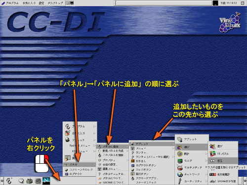
移動したいアイコンをマウスの中ボタンでドラッグしてください．
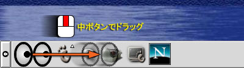
削除したいアイコンをマウスの右ボタンでクリックして，「パネルから取り除く」を選んでください．
パネル上のアイコンには，通常のアプリケーションソフトウェアを起動するものの他に，パネル内に組み込まれて動作しているアプレットと呼ばれる小さなソフトウェアのものがあります．ここでは「メールチェック」というアプレットの設定を変更してみます．
画面の右上にある黒い四角は，メールの到着を知らせるアプレットです．設定を行えば，メールが届いたときにアニメーションが表示されます．これをマウスの右ボタンでクリックしてください．現れたメニューの中の「プロパティ」を選んでください（アプレットによっては「設定」の場合もあります）．
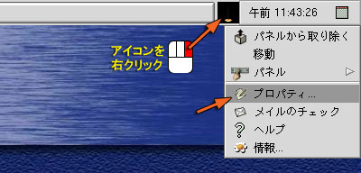
「メールチェックのプロパティ」のウィンドウで「メールボックス」のタブを選び，「メールボックスの場所」として「リモートのIMAPサーバー」，メールサーバとして mail.sys.wakayama-u.ac.jp を設定し，利用承認書に書かれているユーザ名とパスワードを設定してください．また，Folder には INBOX を設定してください．
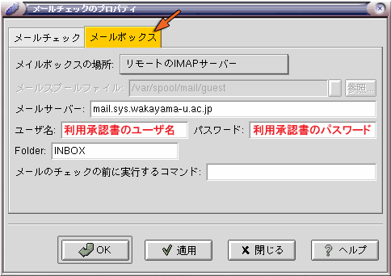
このアイコンから直接 Netscape Mail を起動するように設定できます．「メールチェック」のタブをクリックし，「クリック時に実行」のチェックボックスをクリックした後，その右側の欄に /usr/local/netscape/netscape -mail を入れてください．"-mail" の左側には空白が必要です．
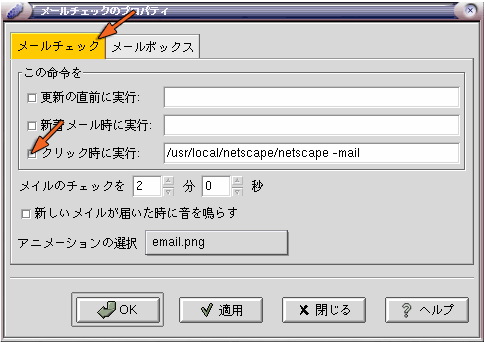
設定が完了したら「OK」をクリックしてください．
いわゆる「コピペ」の方法です．文字が表示されている部分をマウスの左ボタンでドラッグしたとき，その文字がコピー可能なら色が反転します．そこでマウスボタンを離してコピー先にマウスを移動し，マウスの中ボタンをクリックしてください．
コンピュータのデータにはワープロで作成した文書やデジカメで撮影した画像など，さまざまなものがあります．これらのデータはファイルとして，コンピュータの外部記憶装置（ハードディスクなど）に記録されます．しかし，文書であれ画像であれ，コンピュータのデータであれば０と１の２進数で表されたデジタルデータなので，外部記憶装置に記録する際に一つ一つのデータを区別しておかないと，データが混ざってあとで取り出せなくなってしまいます．
そこで，ひとつのデータごとに外部記憶装置上の一定の領域を割り当て，それに名前をつけることによって，データを管理できるようにします．このように，名前をつけたデータのひと塊のことをファイルと呼び，その名前のことをファイル名と言います．

UNIXやLinuxのファイル名には，英字，数字，ハイフン(-)，アンダースコア(_)，それにピリオド(.) が使えます．コンマ(,)や+，%もたいてい問題なく使えると思います．英字の大文字と小文字は区別されます．これら以外の記号文字には特別な機能が与えられている場合があるため，使えないか，使えたとしてもとても面倒なことになるので，使わないほうが無難です．日本語の文字もファイル名に使えます．
| ファイル名に使える文字 | |
|---|---|
| アルファベット | A～Z, a～z |
| 数字 | 0～9 |
| ハイフン（マイナス） | - |
| アンダースコア（下線） | _ |
| ピリオド | . |
| そのほか | +,%,#,@,チルダ(~),コロン(:),コンマ(,) |
ただし#，チルダ(~)，コンマ(,)などは，アプリケーションソフトウェアによって特別な意味が与えられている場合があります．またハイフン(-)とピリオド(.)は，ファイル名の中で使う位置に注意が必要です．
ファイル名の長さは255文字まで（日本語の場合は127文字まで）です．
ファイル名の末尾の，ピリオド(.)に続いた部分は，ファイル名の拡張子として利用される場合があります．拡張子は通常そのファイルの種類を示し，アプリケーションソフトウェアがそのファイルの取り扱い方法を判断するのに利用します．ただし，UNIXやLinuxにおいて拡張子の取り扱いはWindowsほど厳密ではなく，拡張子を持たないファイルも存在します．
| ファイル名の拡張子の例 | |
|---|---|
| テキストファイル | .txt (例 report.txt, readme.txt) |
| TeX ソースファイル | .tex (例 paper.tex, article.tex) |
| C 言語ソースファイル | .c (例 prog.c, main.c) |
| C++ 言語ソースファイル | .cc .c++ .cpp (例 prog.cc, main.c++) |
| オブジェクトファイル | .o (例 prog.o, main.o) |
| PostScript ファイル | .ps (例 paper.ps, figure.ps) |
| EPS ファイル | .eps .epsf (例 paper.eps, figure.eps) |
| JPEG 画像ファイル | .jpg .jpeg .jfif (例 photo.jpg) |
| GIF 画像ファイル | .gif (例 fig1.gif) |
| PNG 画像ファイル | .png (例 button.png) |
| Tgif 図形ファイル | .obj (例 figure.obj) |
| VRML 図形ファイル | .wrl .vrml (例 dango.wrl) |
テキストファイルは文字だけからなるデータです．その他については後に必要に応じて解説します．
それではターミナルを開いてください．
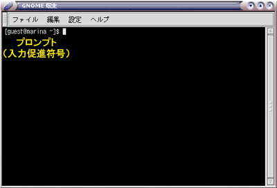
ターミナル (gnome-terminal) を起動すると，その中でシェルが起動します．シェルとは利用者の命令をコンピュータ（オペレーティングシステム）に伝達するインタプリタと呼ばれる種類のソフトウェアで，利用者からコマンド（命令）が与えられるのを待っています． 現在使用しているシェルは csh（Ｃシェル）というものです（実際にはその拡張版の tcsh が動いています）．このようなソフトウェアには，他に sh，bash，ksh，zsh などがあります．
“[ユーザ名@コンピュータ名 ~]$”という表示はプロンプト（入力促進符号）と呼ばれ，csh がコマンド待ち状態であることを示しています．プロンプトとして用いる文字列は変更可能です．以降ではこのプロンプトを "%" １個で表します．
このターミナルは仮想端末と呼ばれるソフトウェアで，このウィンドウひとつが１台の端末装置のように振舞います．ターミナルを複数動かせば，それぞれのウィンドウで別々の仕事をすることができます．このような仮想端末プログラムには，gnome-terminal の他に X Window System 標準の xterm，xterm を日本語化した kterm，xterm を「軽量化」した rxvt，背景に画像を仕込める Eterm など，さまざまなものがあります．
シェルはオペレーティングシステムのユーザインタフェースとして働きます．利用者はシェルを通じてコンピュータを操作します．

シェルに対して次の操作（右側の欄の下線部）を行ってください．なお，% はプロンプトを示します．
| コマンドの実行 | |
|---|---|
| キーボードから date とタイプし， 改行（[Enter]をタイプ）する．コマンドは改行することによって実行を開始する．date は現在時刻を出力するコマンド． |
% date[Enter] ↓実行結果（出力） 1998年 5月17日(日曜日) 03時38分38秒 JST % ←次のコマンド待ち状態 |
| 存在しないコマンドを実行するとエラーになる．abcdef というコマンドは存在しない． |
% abcdef[Enter] ↓これはエラーメッセージ abcdef: コマンドが見つかりません． % ←次のコマンド待ち状態 |
コマンドにオプションを付けて実行することで， その動作を変えることができる場合があります．
| コマンドのオプション | |
|---|---|
| date の "-u" はグリニッジ標準時で出力するオプション．コマンドとオプションの間は空白をあける（続けると "date-u"という別のコマンドだと解釈されてしまう）． |
% date -u[Enter] ↓グリニッジ標準時になる
1998年 5月16日(土曜日) 18時38分40秒 GMT
%
|
ココマンドの実行に必要な情報を，引数（ひきすう）で与える場合もあります．
| コマンドの引数 | |
|---|---|
| cal コマンドを引数なしで実行すると今月のカレンダーを表示する． |
% cal[Enter]
1998 年 5 月
日 月 火 水 木 金 土
1 2
3 4 5 6 7 8 9
10 11 12 13 14 15 16
17 18 19 20 21 22 23
24 25 26 27 28 29 30
31
%
|
| コマンドには引数を付けることができるものがある．引数はコマンドの実行に必要な情報を与えるときなどに使う．cal コマンドの引数に月と年を与えて実行する． |
% cal 7 1961[Enter]
1961 年 7 月
日 月 火 水 木 金 土
1
2 3 4 5 6 7 8
9 10 11 12 13 14 15
16 17 18 19 20 21 22
23 24 25 26 27 28 29
30 31
%
|
ここまでで出てきたコマンド
- date
- 現在時刻を出力します．
- cal
- カレンダーを出力します．
コマンドは標準出力と呼ばれる出口に出力を送ります．標準出力は通常，端末装置につながっているので，この出力は画面（仮想端末のウィンドウ）に表示されます．">" という文字を使えば，これを切り替えて出力をファイルに保存することができます．この操作を標準出力のリダイレクトといいます．
| コマンドの出力データをファイルに保存する | |
|---|---|
| date コマンドを実行し， 出力を a というファイルに保存する．出力はファイル a に入るため，画面には表示されない． |
% date > a[Enter]
←何も出力されない
|
| cal コマンドを実行し， 出力を b というファイルに保存する．これも出力がファイル b に入るため，画面には表示されない． |
% cal > b[Enter]
←何も出力されない
|
| ls コマンドを実行する． a と b という２つのファイルができている．ls は現在所有しているファイル名をリストアップする． |
% ls[Enter]
～ a ～ b ～ ←持っているファイル
|
| a というファイルの内容を出力． |
% cat a[Enter] 1998年 5月19日(火曜日) 13時56分59秒 JST |
| b というファイルの内容を出力．cat は引数に指定したファイルの内容を出力するコマンド． |
% cat b[Enter]
1998 年 5 月
日 月 火 水 木 金 土
1 2
3 4 5 6 7 8 9
10 11 12 13 14 15 16
17 18 19 20 21 22 23
24 25 26 27 28 29 30
31
|
">" の代りに ">>" を使えば，既にあるファイルの後ろに別のファイルの内容を追加することができます．
| コマンドの出力データをファイルに追加する | |
|---|---|
| ファイル a の内容を確認してみる． |
% cat a[Enter] 1998年 5月19日(火曜日) 13時56分59秒 JST |
| ">" の代りに ">>" って a に入れる． |
% date >> a[Enter] |
| もう一度ファイル a の内容を確認してみる．それまでの内容の後ろに新しい内容が追加されている． |
% cat a[Enter] 1998年 5月19日(火曜日) 13時56分59秒 JST 1998年 5月19日(火曜日) 14時24分24秒 JST |
標準出力のリダイレクト
- ">"という記号の役割
- ">" という文字は，コマンドの出力データを画面に表示する代りに，その右側に書かれたファイルに保存します．それまでそのファイルの中に入っていた内容は失われます．
- ">>"という記号の役割
- ">>" はコマンドの出力データを既にファイルの中に入っている内容の後ろに追加します．
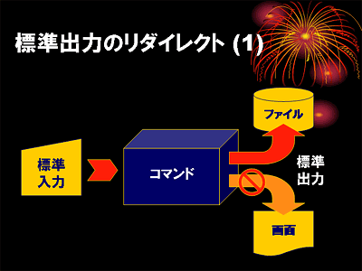
cat もコマンドですから，この標準出力を別のファイルにリダイレクトできます．cat コマンドは引数に指定したファイルをそのまま出力しますから，ファイルのコピーができます．
| cat を使ったファイルのコピー | |
|---|---|
| ファイル b の内容を確認してみる．カレンダーが入っているはず． |
% cat b[Enter]
1998 年 5 月
日 月 火 水 木 金 土
1 2
3 4 5 6 7 8 9
10 11 12 13 14 15 16
17 18 19 20 21 22 23
24 25 26 27 28 29 30
31
|
| ファイル a の内容を画面に出力する代りに， ファイル b に入れる． |
% cat a > b[Enter] |
| それまでのファイル b の内容（カレンダ）は失われ， 代りに a と同じ内容が入っている （ファイルのコピー）． |
% cat a[Enter] 1998年 5月19日(火曜日) 13時56分59秒 JST % cat b[Enter] 1998年 5月19日(火曜日) 13時56分59秒 JST |
cat の引数のファイル名を省略すると，キーボードからタイプした文字が出力されます．これと標準出力のリダイレクトを組み合わせれば，テキストファイルが作成できます．下線部をタイプしてください．
| cat を使ったテキストファイルの作成 | |
|---|---|
| 引数を付けずに cat コマンドを実行すると，プロンプトも出ずにとまったように見える．これは cat がキーボードからの入力を待っている． |
% cat[Enter]
←何も出力されない
|
| とりあえず何かタイプして [Enter] してみる．タイプしたものがそのまま出力される． |
% cat How are you?[Enter] ←キーボードから入力する How are you? ←こっちは cat コマンドの出力 |
| Ctrl-D をタイプすると，再びシェルのプロンプトが現れる．Ctrl-D は入力の終了を意味する． |
% cat How are you? How are you? Ctrl-D ←入力の終了 % ←シェルのプロンプトが現れる |
| cat の出力を c にリダイレクトする．この場合，キーボードからタイプしたものはファイル c に入るので画面には出力されない． |
% cat > c[Enter] お元気ですかぁ？[Enter] ←キーボードから入力する ←何も出力されない |
| Ctrl-D をタイプしてキーボードからの入力を終了する． |
% cat > c
お元気ですかぁ？
Ctrl-D ←入力の終了
%
|
| ファイル c の内容を見てみる（">" を使わないことに注意）．さっきタイプしたものが入っている． |
% cat c[Enter] お元気ですかぁ？ |
ここまでで出てきたコマンド
- ls
- ファイル名の一覧を表示します (list)．
- cat
- ファイルの中身を表示します．このコマンドは引数に複数のファイルを指定でき，それらを連結 (concatenete) して出力します．
テキストファイル（文字だけからなるファイル，文書ファイル）は， これまでやってきたように cat コマンドの出力をファイルにリダイレクトして作成できます． でもこの方法では，一旦作成したテキストファイルを修正したり，変更したりすることができません．そこで，普通テキストファイルの作成には， そういう編集機能を持った テキストエディタと呼ばれるアプリケーションソフトウェアを使います．
これはワードプロセッサみたいなものですが， ワードプロセッサには文書のレイアウトや印刷の機能が備えられているのに対して， テキストエディタは文書の編集に使う機能が充実しています．
Unix や Linux には，結構いろんなテキストエディタが用意されています． ラインエディタは， まだブラウン管を使うタイプの端末装置が普及していなかった頃（つまり昔！），紙に印字しながらタイプするタイプライタ型の端末装置で使うことを考えて作られています．ed などはプロンプトすら出さないとっても不親切な作りになってますが（しかし，これが Unix のスタイルなんですが）， これはこれで使い込めばほかのエディタではできないような凝ったことができます．
ex/vi は Unix/Linux における基本的なエディタの一つです．ex は ed を少しは親切にした感じのラインエディタです．一方 vi は，ex をスクリーンモード（画面上で編集するモード）にしたスクリーンエディタです．将来 UNIX や Linux を使い込むつもりがあるなら，これらの使い方を覚えておいて損はないでしょう．ちなみに，vi のキー操作は， jnethack というゲームをやると自然と身に付きます（ウソ）．
emacs は， この中のエディタで最も高機能なエディタです．このエディタの特徴は自己拡張可能な点にあり，ほとんどの機能が emacs 自体がもつ emacs lisp というプログラミング言語で実現されています．また英語，日本語のみならず中国語（大陸，台湾），韓国語，タイ語など， 多国語に対応しています．xemacs はこの emacs に対して X Window System 関係の機能を拡張したものです．
| テキストエディタの種類 | |
|---|---|
| ed | ラインエディタ，玄人向け？ |
| ex | ラインエディタ，基本です． |
| vi (vim) | ターミナル用のスクリーンエディタ |
| gedit | タブが使えるウィンドウモード用のスクリーンエディタ |
| xedit | X Window System 付属のスクリーンエディタ |
| jed | emacs 等似たターミナル用のスクリーンエディタ |
| emacs | ターミナル／ウィンドウ両用の高機能なスクリーンエディタ |
| xemacs | emacs の X Window System 関係機能強化版 |
ここでは emacs を基本に解説していきます． xemacs の基本的な操作方法は emacs と同じです．
emacs を起動するには， ターミナルのシェルから emacs とタイプして改行します．X Window System 上では，emacs は動かしっぱなしにして使うことが多いので，コマンドに & を付けてバックグラウンドで起動しておくことにします．こうすると，emacs を起動したシェルも引き続き使用できるようになります．
| emacs を起動する |
|---|
% emacs &[Enter] |
起動すると，下のようなウィンドウが現れます．ウィンドウ内に簡単な解説が表示されていますが， これはマウスをクリックしたり，何かキーをタイプすると消えます．
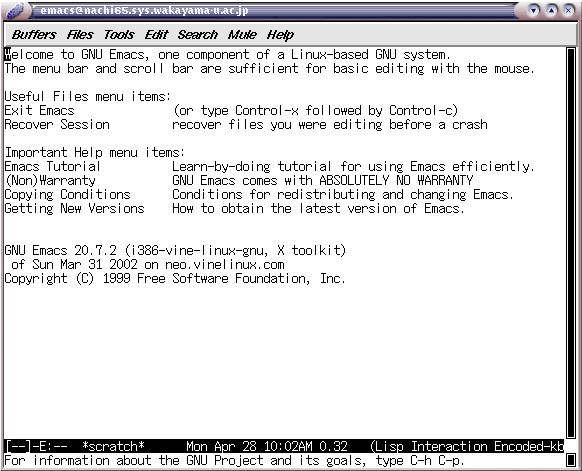
emacs は大半の操作をキーボードから行います． 一部の機能はメニューバーからも操作できますが， ここではキー操作についてのみ説明します．なお，メニューバーのメニューには，同じ機能を呼び出すキー操作が表示されている場合があります．
| キー操作の表記 | |
|---|---|
| C-x | [Ctrl]キーを押しながら，x をタイプする (Ctrl-X) |
| C-x C-c | C-x をタイプした後，C-c をタイプする |
| M-x | [Alt]キーを押しながら，x をタイプする (Alt-X) |
| ESC x | [ESC]キーをタイプした後，x をタイプする |
| 端末装置によっては Alt-X が使えない場合があるので，たいてい ESC x が Alt-X と同じ動作をするようになっています． | |
emacs には非常に多くの機能があります（メールの読み書きや Web ブラウザにも使えます）が，ここではよく使用するキー操作の抜粋を示します．今はとりあえずここは読み飛ばして，後で必要に応じて読み返してください．
| キー操作 | |
|---|---|
| ファイルを開く | C-x C-f |
| 別のファイルを読み込む | C-x i |
| 文字入力 | その文字をタイプ |
| 一字削除 | [Backspace] |
| 挿入／上書き切り替え | [Insert] |
| カーソル移動 |  |
| 文字列の検索 | 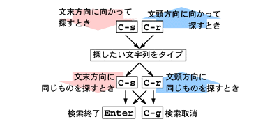 |
| 文字列の置換 |  |
| １行空ける | C-o |
| 行末まで削除 | C-k |
| カーソル位置にマークを付ける | C-スペース |
| カーソル位置とマーク位置の入れ替え | C-x C-x |
| マーク位置からカーソル位置まで削除 | C-w |
| マーク位置からカーソル位置までコピー | M-w |
| 削除／コピーした内容を貼り付け | C-y |
| 変更取り消し | C-_ または C-x u |
| 操作の中止 | C-g |
| ファイルの保存 | C-x C-s |
| 名前を付けてファイルを保存 | C-x C-w |
| ヘルプのメニューを表示 | [Delete] ? |
| info を表示 | [Delete] i |
| emacs を終了 | C-x C-c |
| emacs 本来の設定では，[Delete] キーで直前の１文字を削除し，C-h ([Backspace]) でヘルプ関連の機能を呼び出すようになっていますが，演習室のコンピュータではこの２つのキーの役割を交換しています． | |
ファイルを開くには C-x C-f をタイプしてください． するとウインドウの最下行（ミニバッファ）に開くファイル名を聞いてきますので，ここで存在しないファイル名を指定すれば，そのファイルを新規に作成します．
| ファイルを作成する | |
|---|---|
| C-x C-f をタイプする．ミニバッファに開くファイル名を聞いてくる． | |
| ここでは file.txt というファイルの作成を行うことにする．最後に [Enter] をタイプ． | |
ファイルが存在すれば，そのファイルがバッファに読み込まれ，ウィンドウの上部に内容が表示されます．今は新規作成なので，バッファ内は空でになっており，ミニバッファには (New File) と表示されているはずです．
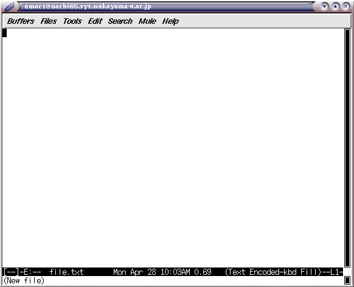
バッファとミニバッファemacs において編集対象のテキストファイルを保持する機構のことを， バッファと呼びます． emacs は同時に複数のバッファを管理することができます． 通常はそのうち一つのバッファの内容がウィンドウに表示されています（画面を分割して，複数のバッファを同時に表示することもできます）．また，コマンドやファイル名などの入力を行うときには，カーソルがウィンドウの最下行に移動します． この場所はミニバッファと呼ばれます．
試しに，次の内容をタイプしてみてください．間違っていても構いません．．
A girl and a boy bump into each other -- surely an accident.[Enter]
A girl and a boy bump and her handkerchief drops -- surely another accident.[Enter]
But when a girl gives a boy a dead squid -- *that had to mean something*.[Enter]
-- S. Morganstern, "The Silent Gondoliers"[Enter]
このバッファの内容をファイルに保存します．C-x C-s をタイプしてください．
| バッファをファイルに保存する | |
|---|---|
| C-x C-s をタイプする．バッファの内容がファイルに保存される． | 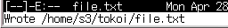 |
ファイルが保存できたら，一旦 emacs を終了します．C-x C-c をタイプしてください．
問い合わせが表示されるときファイルの編集中に，別の方法でそのファイルを修正してしまうと，バッファをファイルに保存する際に問い合わせが表示されます．また，バッファをファイルに保存せずに emacs を終了しようとしたときにも問い合わせが表示されます．問い合わせ自体は簡単な英語ですので，問い合わせにしたがって yes か no をタイプして [Enter] をタイプしてください（y か n をタイプする場合もあります）．
まず，先ほど保存したファイルを開きます．C-x C-f をタイプしてください．ここでファイル名として file.txt を指定するのですが，ミニバッファに開くファイル名を聞いてきたら，試しに先頭の２文字 "fi" をタイプしてみてください．
| 既存ファイルを開く | |
|---|---|
| C-x C-f をタイプする．ミニバッファに開くファイル名を聞いてくる． | |
| fi をタイプする． | |
| スペースをタイプする． | |
| もう一度スペースをタイプする．ファイル名が完成したら [Enter] をタイプする． | |
ミニバッファにおいてコマンドやファイル名を入力する際，途中まで文字をタイプしたあとスペースや [Tab] をタイプすると， 残りの文字を補完してくれます（コンプリーション機能）． 補完の結果，コマンドやファイル名が一意に決まらない（候補が複数ある）ときは， その一覧を表示します．
A girl and a boy bump into each other -- surely an accident.
A girl and a boy bump and her handkerchief drops -- surely another accident.
But when a girl gives a boy a dead squid -- *that had to mean something*.
-- S. Morganstern, "The Silent Gondoliers"
先ほどタイプした内容が表示されたら C-n C-p C-f C-b の４つのキーを使って，たぶん左上隅の A のところにある文字カーソルを，３行目の -- のところに移動してください．
A girl and a boy bump into each other -- surely an accident.
A girl and a boy bump and her handkerchief drops -- surely another accident.
But when a girl gives a boy a dead squid -- *that had to mean something*.
-- S. Morganstern, "The Silent Gondoliers"
ここで C-k をタイプすると，カーソルから右が消えます．
A girl and a boy bump into each other -- surely an accident.
A girl and a boy bump and her handkerchief drops -- surely another accident.
But when a girl gives a boy a dead squid _
-- S. Morganstern, "The Silent Gondoliers"
もう一度C-k をタイプすると，改行が消えて次の行とくっつきます（行が長くなるので，右端が折り返されるかもしれません）．
A girl and a boy bump into each other -- surely an accident.
A girl and a boy bump and her handkerchief drops -- surely another accident.
But when a girl gives a boy a dead squid -- S. Morganstern, "The Silent Gondoliers"
さらにC-k をタイプすると，くっついた部分も消えます．
A girl and a boy bump into each other -- surely an accident.
A girl and a boy bump and her handkerchief drops -- surely another accident.
But when a girl gives a boy a dead squid _
カーソルを１行目の -- に移動してください．
A girl and a boy bump into each other -- surely an accident.
A girl and a boy bump and her handkerchief drops -- surely another accident.
But when a girl gives a boy a dead squid
ここで C-y をタイプすると，先ほど消えた部分がこの位置に挿入されます．
A girl and a boy bump into each other -- *that had to mean something*.
-- S. Morganstern, "The Silent Gondoliers"-- surely an accident.
A girl and a boy bump and her handkerchief drops -- surely another accident.
But when a girl gives a boy a dead squid
次に文字列の検索を行ってみましょう．C-s をタイプしてください．するとミニバッファに I-serch: と表示されます．ここに girl とタイプしてください．
| 文字列を検索する | |
|---|---|
| C-s をタイプする． | 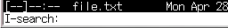 |
| girl （検索する文字列）をタイプする． | 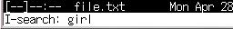 |
多分カーソルは３行目の girl という単語の位置に移動したと思います．
A girl and a boy bump into each other -- *that had to mean something*.
-- S. Morganstern, "The Silent Gondoliers"-- surely an accident.
A girl and a boy bump and her handkerchief drops -- surely another accident.
But when a girl gives a boy a dead squid
この状態でもう一度 C-s をタイプすると，４行目の girl のところに移動します．
A girl and a boy bump into each other -- *that had to mean something*.
-- S. Morganstern, "The Silent Gondoliers"-- surely an accident.
A girl and a boy bump and her handkerchief drops -- surely another accident.
But when a girl gives a boy a dead squid
さらにC-s をタイプすると，ここより後に girl はないので，ミニバッファに次のようなメッセージが出ます．
| 同じ文字列を検索する | |
|---|---|
| 続けて C-s をタイプする． | |
| バッファを一回りすると右のメッセージが出る． | 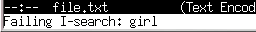 |
それでも，もう一度 C-s をタイプすると，今度はバッファの先頭から girl を探し始めます．
A girl and a boy bump into each other -- *that had to mean something*.
-- S. Morganstern, "The Silent Gondoliers"-- surely an accident.
A girl and a boy bump and her handkerchief drops -- surely another accident.
But when a girl gives a boy a dead squid
１行目の girl のところにカーソルが来たら，[Enter]をタイプしてください．すると検索を開始した位置が記憶されます（マーク）．今度は C-s を２回続けてタイプしてください．すると再び girl （すなわち直前に探した文字列）を探し始めます．
A girl and a boy bump into each other -- *that had to mean something*.
-- S. Morganstern, "The Silent Gondoliers"-- surely an accident.
A girl and a boy bump and her handkerchief drops -- surely another accident.
But when a girl gives a boy a dead squid
３行目の girl のところに来たら，[Enter]をタイプしてください．そして C-w をタイプすると，１つ目の girl の位置（マーク位置）から現在位置までが削除されます．なお，カーソル位置に明示的にマークを付けるには，C-スペース をタイプします．
A girl and a boy bump and her handkerchief drops -- surely another accident.
But when a girl gives a boy a dead squid
C-w で削除した内容も，C-y で現在のカーソル位置に挿入できます．
それでは，最後にC-_ を何回かタイプしてください．これまでに行った編集作業が取り消されます．この操作はアンドゥ (Undo) と呼ばれます．"_"（アンダースコア，下線）をタイプするには，[Shift]キーを同時に押す必要があるので，C-_ をタイプするには[Ctrl]キーと[Shift]キーを同時に押す必要があります．

もしC-_ がうまく働かないようなら，代わりにC-x u をタイプしてみてください．
ファイルが開いた直後の状態に戻ったら，今度は C-x C-w をタイプし，ミニバッファに file2.txt とタイプして，[Enter]をタイプしてください．
| ファイルを別名で保存する | |
|---|---|
| C-x C-w をタイプする． | 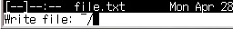 |
| ファイル名をタイプする． | 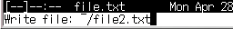 |
C-x C-s が現在のファイル名でファイルを保存するのに対し，C-x C-w は別のファイル名でファイルを保存します．保存が終了したら C-x C-c で emacs を終了してください．
バックアップファイルについてC-x C-s を使って現在のファイル名でバッファを保存すると，そのファイル名の後ろに ~（チルダ）を付けたファイルも作成されます．このファイルは編集前の内容を保存したバックアップファイルです．不要なら削除してください．
emacs ではこれまで使用してきた kinput2 による日本語入力方法（Shift-スペースによる切り替え）のほかに，emacs 自身に組み込まれた egg（たまご）と呼ばれる日本語入力方法が使えます．
それでは，emacs で file3.txt というファイル名のテキストファイルを作りましょう．ファイル名は emacs コマンドの引数で指定することもできます．
| 引数でファイル名を指定する |
|---|
% emacs file3.txt &[Enter] |
egg による日本語の入力を開始するには，C-\ をタイプします． するとウィンドウの下から２行目の左端に “[あ]” が現れます． そのあとローマ字で日本語の文章をタイプしスペースをタイプすると，漢字への変換が行われます． 入力中の日本語は | .. | で挟まれおり （フェンスモード）， 文節の間にスペースが空いています．
| eggによる日本語の入力 | |
|---|---|
| C-\ をタイプする． | 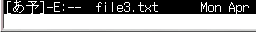 |
| ローマ字で文章をタイプする． | |
| スペースをタイプすると漢字に変換される． | |
| C-i をタイプすると文節が切り詰められる． | |
| C-f で文節を移動できる． | |
| スペースをタイプすると次の候補が現れる． | |
| [Enter]をタイプすると確定する． | |
日本語の入力モードから抜け出るには， もう一度 C-\ をタイプしてください．
| キー操作 | |
|---|---|
| 日本語入力開始／終了 | C-\ |
| 漢字に変換 | スペース |
| 次候補 | スペース または C-n または ↓ |
| 前候補 | C-p または ↑ |
| 文節を伸ばす | C-o |
| 文節を縮める | C-i |
| 次の文節 | C-f または → |
| 前の文節 | C-b または ← |
| 最初の文節 | C-a |
| 最後の文節 | C-e |
| 確定する | [Enter] または C-l |
| 平仮名に変換 | M-h |
| 片仮名に変換 | M-k |
| 候補一覧表示 | M-s |
| 記号入力など | C-^ |
| 取り消し | C-g |
| 単語登録 | M-x toroku-region |
“z+１文字”で日本語のいくつかの記号文字を入力することができます．
| ○ | z1 | ▽ | z2 | △ | z3 | □ | z4 | ◇ | z5 |
|---|---|---|---|---|---|---|---|---|---|
| ☆ | z6 | ◎ | z7 | ￠ | z8 | ♂ | z9 | ♀ | z0 |
| ● | z! | ▼ | z@ | ▲ | z# | ■ | z$ | ◆ | z% |
| ★ | z^ | ￡ | z& | × | z* | 【 | z( | 】 | z) |
| 《 | zq | 》 | zw | 々 | zr | 〆 | zt | 〒 | zp |
| 〈 | zQ | 〉 | zW | 仝 | zR | § | zT | … | z. |
| ※ | zv | ← | zh | ↓ | zj | ↑ | zk | → | zl |
また，“Z+アルファベット１文字”で， 全角文字のアルファベット（本当は『全角文字』とは言いたくない）を入力できます．
| Ａ | ZA | Ｂ | ZB | Ｃ | ZC | Ｄ | ZD | Ｅ | ZE |
|---|
変換しても一発で出てこない単語で， 自分の名前など結構良く使うものは， 登録しておくと便利です．
とりあえず，emacs のバッファのウィンドウ上に， “なんとかして” その単語を表示させてください． そしてその単語の先頭に C-スペース でマークをつけ， カーソルを移動して単語全体を選択したあと， M-x wnn7-toroku-region をタイプし，[Enter] をタイプします （コマンドは一部をタイプ後スペースをタイプすれば補完されます）．
| 単語を辞書に登録する | |
|---|---|
| 単語の先頭で C-スペースをタイプする． | |
| 単語の後ろに移動する． | |
| emacs の wnn7-toroku-region コマンドを実行する． |
M-x wnn7-toroku-region[Enter] |
| 読みを入力する． |
辞書登録『栄谷』 読み：さかえだに[Enter] |
| 辞書は ud（ユーザ辞書）を選択する． |
登録辞書名: 0.ud[Enter] |
| 品詞（大分類）を選択する． |
品詞名:: 0.普通名詞/ 1.固有名詞/ 2.動詞/ ...(以下略) |
| 品詞（小分類）を選択する． |
品詞名;[固有名詞]: 0.人名 1.地名 ...(以下略) |
単語の範囲をマウスでドラッグしたりダブルクリックしても， その部分の選択を行うことができます．
シェル上でテキストファイルの印刷を行うには lpr コマンドを用います． ただし，できるだけ a2ps や mpage というコマンドを介して，用紙を節約するようにしてください．
| テキストファイルを印刷する |
|---|
% lpr ファイル名[Enter] % mpage ファイル名 | lpr[Enter] % a2ps ファイル名[Enter] |
印刷を取り消したいときは，lpq コマンドで印刷ジョブを確認してから，lprm コマンドの引数にジョブ番号を指定してください．
emacs が動かなくなってしまったときemacs が止まってしまって先に進めなくなってしまったときは， C-g（中止）を数回タイプしてみてください．それでも何の反応もない場合は，emacs を起動したターミナルのウィンドウでCtrl-Cをタイプして，emacs を強制終了してください．

課題の実施は皆さんが TUTRIAL.ja と kenpou.txt というファイルを保存しているかどうかで確認します．これらのファイルを５月１３日までに作成してください．
長い行の取り扱いについてemacs は「テキストエディタ」なので， 文書の見栄えのレイアウトをするような機能はほとんど持っていません． 長い行はウィンドウの右端で折り返しますが， これもあくまで表示のために便宜的に行っているに過ぎず， それが「１行」として取り扱われていることには変わりありません （C-n や C-p をするとわかります）．なお，文書をきれいにレイアウトして印刷する場合には，この講義では LaTeX というシステムを使います（後述）．